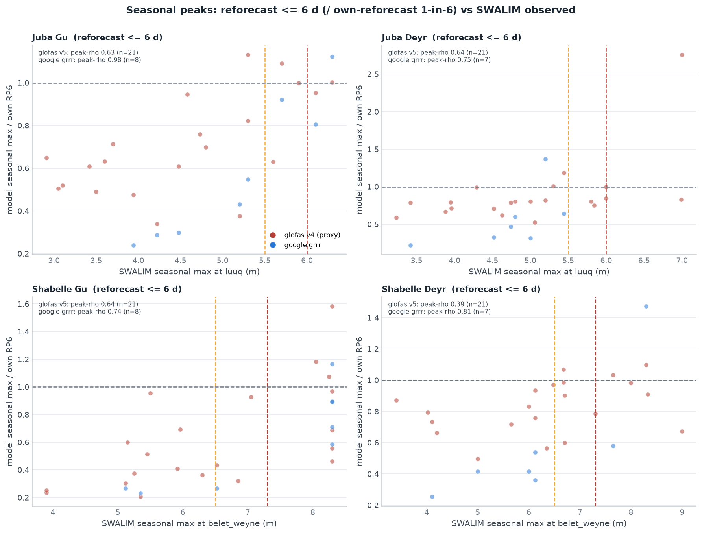
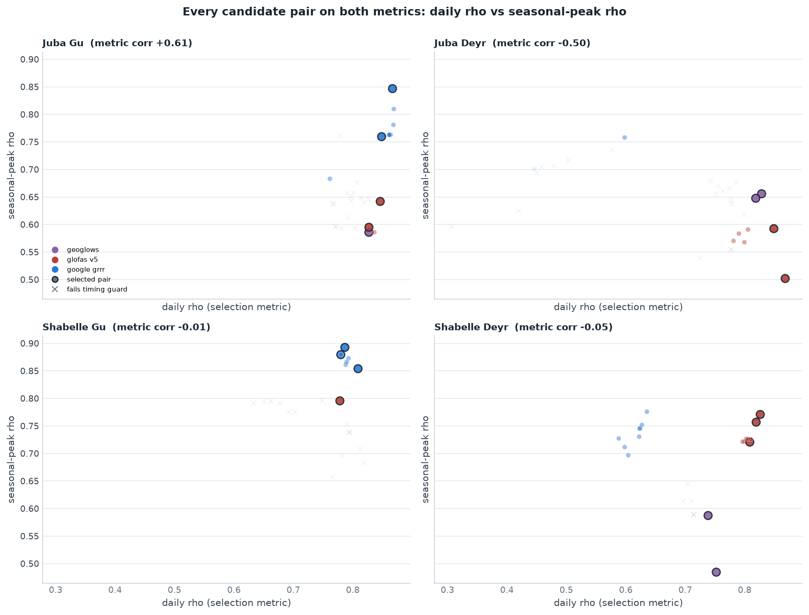
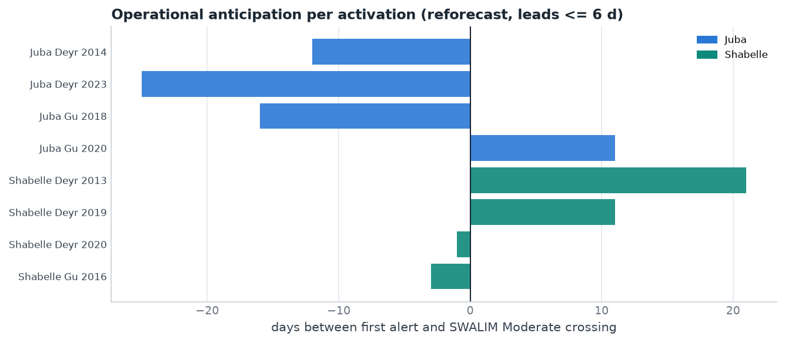
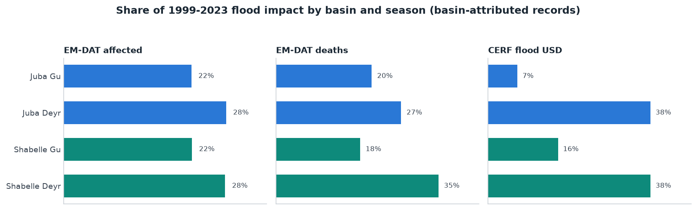

The mechanism at a glance
Four river-season windows, each running on one forecast source rather than a mixture. Inside a window, every monitored point's flow is compared with its own return-period threshold and the window activates when enough points cross in the same season. At least two points must agree, so no single point releases the money, and never all of them, so one quiet point cannot block it.
All seven reporting-era points are monitored: four on the Juba (Luuq, Dollow, Bardheere, Bualle) and three on the Shabelle (Belet Weyne, Bulo Burti, Jowhar). No threshold, on either leg, sits below 1-in-3.
| window | action trigger (leads 1-7 d) | leg RP | readiness (leads 7-12 d) | readiness RP |
|---|---|---|---|---|
| Juba Gu | GEOGloWS v2: 2 of 4 points over their 1-in-5-yr thresholds | 13.0 yr | GloFAS v4 ens-median: 2 of 4 over 1-in-5-yr | 5.5 yr |
| Juba Deyr | GloFAS v5: 3 of 4 points over their 1-in-4-yr thresholds | 13.0 yr | GloFAS v4 ens-median: 3 of 4 over 1-in-4-yr | 4.4 yr |
| Shabelle Gu | GloFAS v5: 2 of 3 points over their 1-in-6-yr thresholds | 6.5 yr | GloFAS v4 ens-median: 2 of 3 over 1-in-5-yr | 5.5 yr |
| Shabelle Deyr | GloFAS v5: 2 of 3 points over their 1-in-5-yr thresholds | 6.5 yr | GloFAS v4 ens-median: 2 of 3 over 1-in-5-yr | 5.5 yr |
- It agrees with the impact record on the big years. All five costliest years in EM-DAT and CERF terms — 2006, 2018, 2019, 2020 and 2023 — are severe under the rule.
- 1999 to 2001 cannot be assessed. The Juba had no gauge reporting and the Shabelle only one, so no consensus is possible and those years read as quiet rather than as unknown. Nothing activates before 2005, so no year is wrongly scored as a miss, but the benchmark effectively starts in 2002.
- 2021 is a genuine gap. EM-DAT records 400,000 people affected, yet only Bardheere on the Juba and Belet Weyne on the Shabelle crossed, so the rule reads no flood. Belet Weyne's peak that year sits exactly at bank full (8.30 m), where the gauge record is censored and the true level is unknown, so consensus can be understated in exactly the years that matter most.
- 2016 is the reverse case. Three of the four Juba gauges and all three Shabelle gauges crossed their levels in Gu, but EM-DAT records nobody affected. Gauge levels and recorded impact are not the same measurement.
What happens without Google Flood Hub
Use the provider switch above to see it. With Google removed the windows run on GloFAS, the envelope sits at 1-in-3.2 (8 of 25 years) and severe-year coverage is 7 of 8: the same coverage, so on this evidence dropping Google costs nothing measurable.

How the model was chosen, one per river and season
One source per river and season, so four choices. Four steps:
- Build the candidate rules. For a window and a candidate model, put a threshold at every one of the river's points, taken from that model's own annual maxima (1-in-3 to 1-in-6). The window activates in a year when at least N points cross in that season.
- Score the envelope, not the window. The money is released when any of the four windows activates, so candidates are judged on that union: how often it activates, how many of the severe years it catches, and how often it activates in a year with no recorded flood.
- Apply the constraints. Thresholds never below 1-in-3 nor above a quarter of the record; all seven points monitored; at least two must agree but never all of them; every window must activate at least twice in 25 years.
- Pick. Nearest 1-in-3 overall with the most severe years caught. Ties break on fewer no-flood activations, then on tracking correlation.

Multi-model representation is earned, not injected: GEOGloWS clears the floor in three of the four windows — Juba Deyr (Dollow ρ 0.83 at +1 d and Luuq 0.82, ahead of both Google pairs), Juba Gu (Dollow 0.83, floor 0.77) and Shabelle Deyr (Belet Weyne 0.75 and Bulo Burti 0.74, floor 0.73). In Shabelle Gu it has no pair passing the timing guard (−4 to −10 d) and stays out — as does every GloFAS pair there except Belet Weyne (−3 d, exactly on the guard), which is why that window is Google-heavy. An earlier draft used an explicit diversity rule to the same effect; it proved unnecessary and was dropped. The full per-station numbers (greyed rows = no active gauge):
Per-station selection detail (ρ / lag per model, all four windows)
Seasonal peaks: model vs gauge
Carried over unchanged from the published multi-source study: this diagnostic compares products, so it does not depend on how many points vote or where the thresholds sit.
Daily rank correlation can flatter a model that merely tracks the seasonal cycle. The sharper diagnostic is one point per season-year: the model's seasonal peak against the observed seasonal peak at the reference gauge — does the model rank the years correctly? For display each model's peak is divided by its own 1-in-6 threshold (rank correlation is unaffected by the normalisation), so the quadrants read directly: top-right = the model ran over its own threshold in a year the gauge also ran high.

| window | peak Spearman ρ — reanalysis (n = 21–25) | peak ρ — reforecast ≤ 6 d | |||
|---|---|---|---|---|---|
| GEOGloWS | GloFAS v5 | Google GRRR | GloFAS v4 (proxy) | Google GRRR | |
| Juba Gu | 0.65 | 0.64 | 0.85 | 0.63 | 0.98 |
| Juba Deyr | 0.65 | 0.59 | 0.74 | 0.64 | 0.75 |
| Shabelle Gu | 0.68 | 0.80 | 0.85 | 0.64 | 0.74 |
| Shabelle Deyr | 0.49 | 0.77 | 0.78 | 0.39 | 0.81 |

Does the selection metric matter? Daily ρ vs peak ρ vs lead time
Nigeria's recipe: select on daily wet-season lag-optimised Spearman ρ, use annual-peak ρ and peak-timing offset as post-selection guards, and let lead time enter through the reforecast checks rather than the selection score. Here the question was put to the data directly: every candidate pair scored on both metrics, and the full pool → grid → basin calibration re-run under three selection rules — daily-ρ floor (adopted), peak-ρ floor, and their mean, each with the same timing guard.

som_ms_metric_robustness). With the
active-gauge restriction the pools are 4–5 pairs, so a metric change that
reshuffles one pair can move one marginal year — under the previous 8–12-pair
pools the three metrics were exactly identical. Daily ρ stays as the primary
metric because it is the far more stable estimator (~2,000 daily observations
against ~22 annual peaks, where a single flood year moves peak-ρ by ~0.1);
peak-ρ is published per pair as a diagnostic (figure above and the
som_ms_pair_metrics table), and lead time is already in the design
twice — the −3-day timing guard at selection, and the reforecast backtests at
the operational lead bands. A composite score was considered and rejected: it
would add a tunable weight to arbitrate a single marginal year.
Thresholds and calibration
Each monitored point gets its threshold from its own model's climatology: the Weibull plotting position of that point's seasonal maxima, so a product is judged on timing rather than on scale. 1-in-3 is the floor and a quarter of the record is the ceiling, which on 25 years allows 1-in-3 to 1-in-6. 1-in-2 is not used anywhere, on either leg.

Calibrated on the reanalysis, checked on the forecasts
Refitting the same rule on the forecast archives themselves, 2003–2023, thresholds from 1-in-3 to 1-in-5. Out of the field: Google GRRR, whose archive is too short to carry a 1-in-3 threshold, so it can only be calibrated on the retrospective.
| window | source | gauge threshold | points that must agree | would have activated in |
|---|---|---|---|---|
| Juba Gu | GloFAS v4 | 1-in-3 | 2 of 4 | 2005, 2010, 2013, 2016, 2018, 2020, 2023 |
| Juba Deyr | GloFAS v4 | 1-in-5 | 3 of 4 | 2015, 2017, 2023 |
| Shabelle Gu | GloFAS v4 | 1-in-4 | 2 of 3 | 2005, 2010, 2016, 2018 |
| Shabelle Deyr | GloFAS v4 | 1-in-5 | 2 of 3 | 2010, 2013, 2019, 2020 |
Envelope 1-in-2.2 (10 of 21 years), catching 5 of the 8 severe years. This is the closest rate the forecast record supports; nothing lands on 1-in-3.
The tuning surface
The Nigeria-style grid search (per state there; per basin × season here — the same recipe as P. Wairimu's notebook 08): every (per-pair RP threshold, N pairs required) cell is scored against the seasonal SWALIM benchmark. The adopted cell is not always the best single-window score — it is the best choice subject to the basin-level constraints (near-equal per-basin frequency across the Gu+Deyr union, severe-coverage-first, ≥ 3-yr overall enforced jointly across the basins). With 4–5-pair pools the surface is small enough to read whole: the neighbors show what loosening a leg would cost in false activations, or tightening one in missed severe years.

How the official SWALIM levels compare with the fitted ones
The benchmark years above are defined by empirical return periods of the
gauges' own seasonal maxima, not by SWALIM's published Moderate/High
flood-risk levels — and the check below is why. Putting the official levels on the
empirical RP scale (per active gauge and season, 1999–2023) shows they imply wildly
inconsistent frequencies: "Moderate" ranges from a level the river reaches most
years (Dollow Deyr, ~1-in-1.3; Jowhar Gu, ~1-in-1.6) to a genuinely rare one (Luuq
Gu, ~1-in-4.6), and "High" from ~1-in-1.8 (Dollow) to ~1-in-11.5 (Luuq Gu). They
are engineering levels of uncertain provenance, not a consistent severity scale —
the same conclusion P. Wairimu's notebook 01 flagged when the published
max_level at Belet Weyne came out below its bank-full level.
Everything in this mechanism therefore runs on each gauge's own empirical RP3/RP5
levels (table som_ms_swalim_rp); the official levels remain useful
only as familiar reference lines for readers of SWALIM bulletins.

Forecast skill against each model's own reanalysis
Carried over unchanged from the published multi-source study: this diagnostic compares products, so it does not depend on how many points vote or where the thresholds sit.
The assume-bias-for-all-sources rule, quantified: per model and lead time, how well the forecast reproduces the model's own reanalysis or retrospective — rank correlation (does it track itself?) and the median forecast/reanalysis ratio (is it biased against its own climatology?). Computed per station on flood-season days, median across the 18 stations.

Would it have worked operationally?
The calibration record is reanalysis — a model's afterwards-view of its own past. The operational test replays the historical forecasts: per pair and valid day, the most alarming ≤ 6-day signal (max over issue dates — with mixed providers in one window, a monitoring day combines each provider's latest forecast). Google pairs use their own reforecast (2016–2023); GloFAS v5 pairs the v4 reforecast (2003–2023, ensemble median, thresholds refit on v4's own climatology, since no v5 reforecast exists); GEOGloWS pairs the retrospective as a lead-0 stand-in (hindsight — flagged per window). That forecast skill barely decays from lead 1 to 7 — initial-condition-driven on these slow rivers — is P. Wairimu's notebook 03 finding, and is what makes both lead bands viable at all.
| window | calibrated on | run on | reproduces its calibration years? |
|---|---|---|---|
| Juba Gu | GEOGloWS v2 reanalysis | GEOGloWS v2 operationally; lead-time evidence from GloFAS v4 | cannot be shown directly: no reforecast for this version |
| Juba Deyr | GloFAS v5 reanalysis | GloFAS v5 operationally; lead-time evidence from GloFAS v4 | cannot be shown directly: no reforecast for this version |
| Shabelle Gu | GloFAS v5 reanalysis | GloFAS v5 operationally; lead-time evidence from GloFAS v4 | cannot be shown directly: no reforecast for this version |
| Shabelle Deyr | GloFAS v5 reanalysis | GloFAS v5 operationally; lead-time evidence from GloFAS v4 | cannot be shown directly: no reforecast for this version |

The readiness leg (7–12 days)
Readiness runs on GloFAS v4 ensemble-median forecasts at leads 7 to 12, the only archive covering that band, over the same full set of points, with thresholds refitted on that series. It releases only the mobilisation share and is held to the same floor: no threshold below 1-in-3, which is the change from the published mechanism, where readiness sat on 1-in-2 levels.
| window | readiness rule | readiness years | covers action years |
|---|---|---|---|
| Juba Gu | 2 of 4 points over 1-in-5 | 2010, 2016, 2018, 2020 | 2 of 2 |
| Juba Deyr | 3 of 4 points over 1-in-4 | 2005, 2006, 2015, 2017, 2023 | 2 of 2 |
| Shabelle Gu | 2 of 3 points over 1-in-5 | 2005, 2010, 2013, 2016 | 2 of 4 |
| Shabelle Deyr | 2 of 3 points over 1-in-5 | 2013, 2014, 2019, 2020 | 2 of 4 |
Readiness carries each window's own rule, the same votes and the same return period, refitted on the 7-to-12-day series. It is not tuned to precede activation: an action trigger may activate with no readiness phase ahead of it, which is accepted (decision 2026-08-27). The last column reports how often readiness did lead an activation, as an observation rather than a requirement.
Return-period bookkeeping
| level | trigger | activations (1999-2023) | RP |
|---|---|---|---|
| individual | Juba Gu action | 2 — 2018, 2020 | 13.0 yr |
| individual | Juba Deyr action | 2 — 2006, 2023 | 13.0 yr |
| individual | Shabelle Gu action | 4 — 2005, 2016, 2018, 2020 | 6.5 yr |
| individual | Shabelle Deyr action | 4 — 2006, 2014, 2019, 2023 | 6.5 yr |
| basin | Juba (Gu or Deyr) | 4 | 6.5 yr |
| basin | Shabelle (Gu or Deyr) | 8 | 3.2 yr |
| overall | action, either basin | 8 | 3.2 yr |
Under all-in funding, where any activation releases the full envelope, the effective return period is the overall row: 1-in-3.2 with Google, 1-in-3.2 without. The individual windows are set rarer than that on purpose, because four windows each calibrated to 1-in-3 give a union of roughly 1-in-1.5.
Activations, impact and response, year by year
The two-historical-records rule: the trigger record against impact, not just the hazard benchmark. Everything is grouped basin → season, reverse-chronological. The trigger column is the trigger's actual decision variable: the peak number of (station, model) pairs simultaneously over their thresholds that season-year — the cell fills red when it meets the requirement shown in the season header (= the trigger activates). RP is the empirical return period of that season's maximum level at the SWALIM reference gauge — 5yr = a 1-in-5-year level or higher, 3yr = 1-in-3 to 1-in-5 (Weibull on the gauge's own seasonal maxima, per the threshold check above — not the official flood-risk levels); EM-DAT (purple) is people affected and CERF (blue) the flood allocation (US$), shaded by magnitude, each attributed to the basin(s) named in the event or allocation narrative.
| loading… |
Attribution & caveats. EM-DAT is a floor (entry-criteria bias), split to seasons by start month (Mar–Jun → Gu, Sep–Dec → Deyr); an event naming both rivers is counted under both basins (not split — hover for deaths and the multi-basin flag); events naming neither river (mostly flash floods elsewhere) are excluded. A CERF allocation naming neither river in its narrative is shown under both basins and marked * (they are national riverine-flood responses). Impact columns are context, not a skill score: a formal skill-vs-impact statistic still requires choosing an impact threshold.
Should impact tilt the probabilities?
Near-equal per-basin probability is a design choice, not a law — a basin or season carrying systematically more impact could get a lower relative threshold. Aggregating the basin-attributed records (1999–2023) answers whether the data call for it:

som_ms_impact_by_window). Basin totals are near-equal — Juba 47%,
Shabelle 53% on the three-record average — but the seasons are not:
Deyr carries ~65% of impact (and the two largest CERF flood
allocations) against Gu's ~35%.Re-running the calibration with the activation budget allocated by impact share
instead of equally (table som_ms_impact_tilt) makes the conclusion
concrete:
- A basin tilt changes nothing. The 47/53 split rounds to the same 5/6 activation allocation the joint calibration already adopted — the adopted mechanism's slight Shabelle lean is already impact-consistent.
- A season tilt is possible but costs skill. Pushing Juba's budget toward Deyr (its higher-impact season) forces its Deyr leg to a lower threshold and its Gu leg higher: the tilted variant swaps documented Gu floods for extra Deyr activations, leaves the configuration unchanged: GEOGloWS and GloFAS already carry all four windows, so the envelope stays at 1-in-3.2 with the same severe-year coverage. The calibration already leans Deyr where the data support it (both Deyr legs run at lower pair-RP thresholds than the Gu legs); forcing more requires accepting misses the gauge record says are real.
The honest reading: at basin level the impact data endorse the adopted near-equal split; at season level a deliberate Deyr tilt is a working-group lever, quantified and ready, but it trades verified gauge-flood coverage for impact-weighted frequency — a values decision, not a statistical one.
Open items before a trigger report
- Impact years are still undefined. The trigger is scored against gauge levels, not against recorded humanitarian impact. Until impact years exist, severe-year coverage is a proxy.
- The reanalysis cannot pick the product. Many assignments tie, so the model per window rests on lead-time skill and on operational considerations, not on the backtest.
- Google cannot be calibrated on its own forecasts. Its reforecast starts in 2016, and a 1-in-3 threshold needs about 12 years, so a Google window is necessarily calibrated on the retrospective and only checked at lead time.
- Two Juba points can no longer be verified. Bardheere's gauge record ends 2023-11-30 and Bualle's 2024-03-14. Both can still be forecast at, but neither can be checked against observations from here on.
- Readiness coverage is uneven by season, which is accepted rather than solved: at 7 to 12 days GloFAS v4 leads Gu activations more reliably than Deyr ones, so a Deyr activation may arrive with no readiness phase.